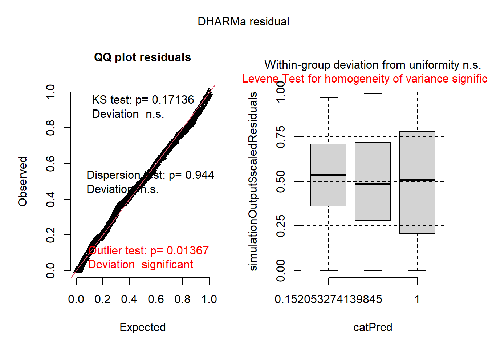
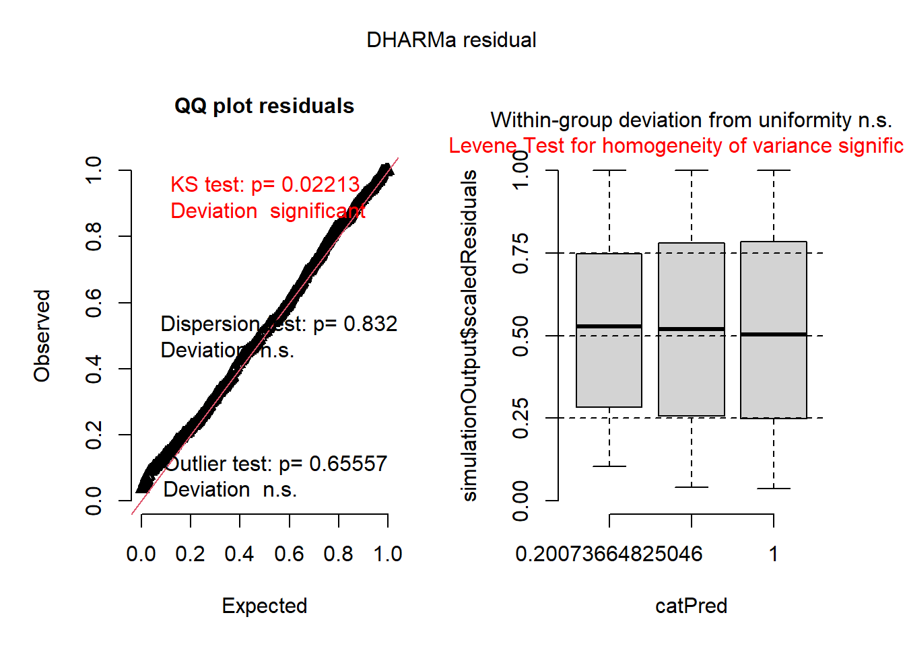
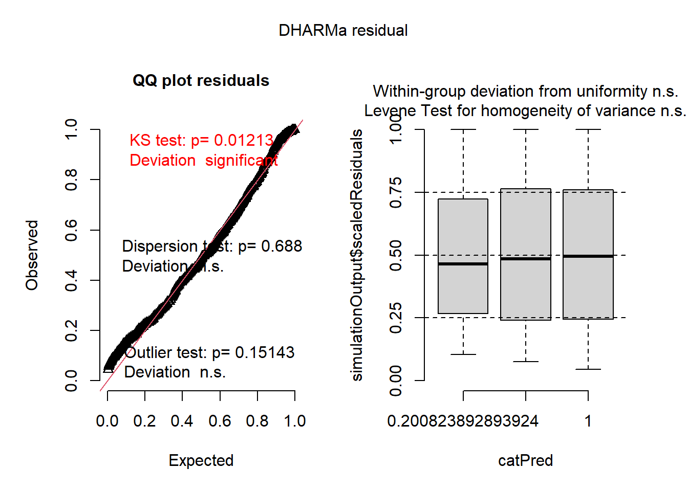
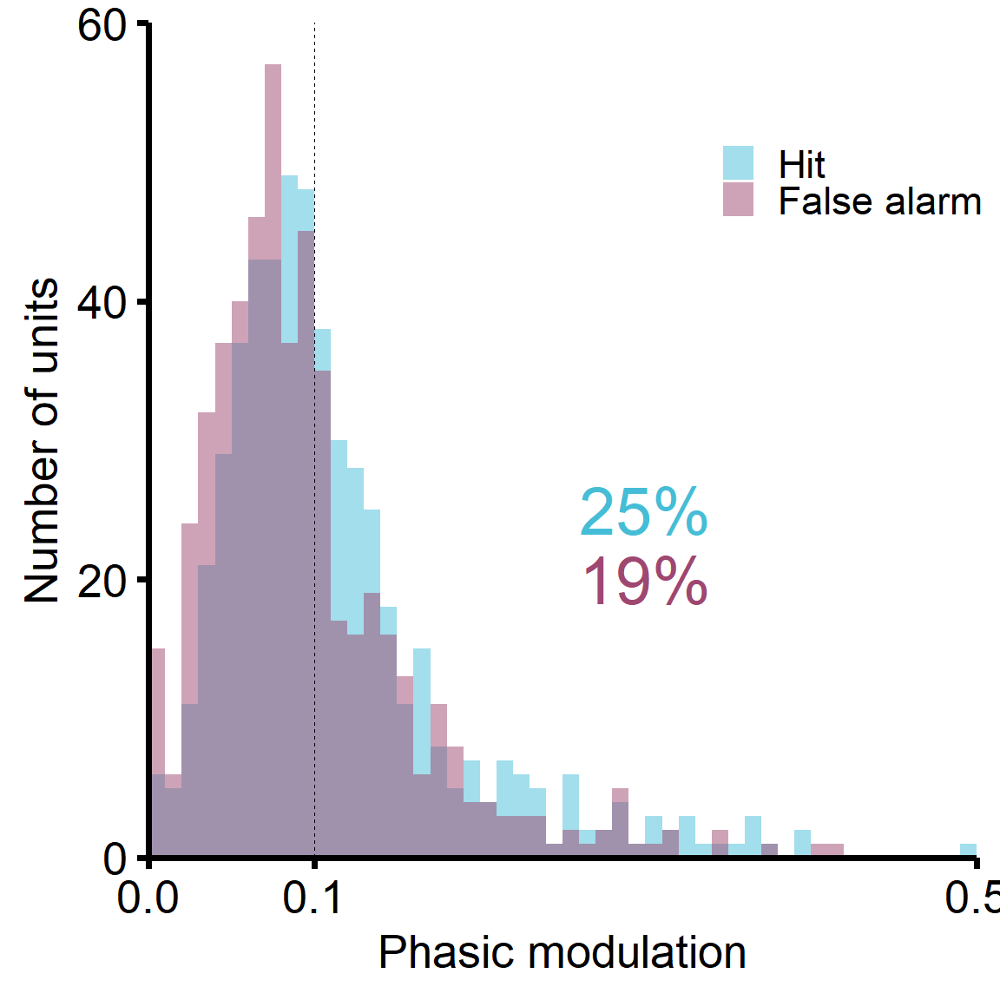
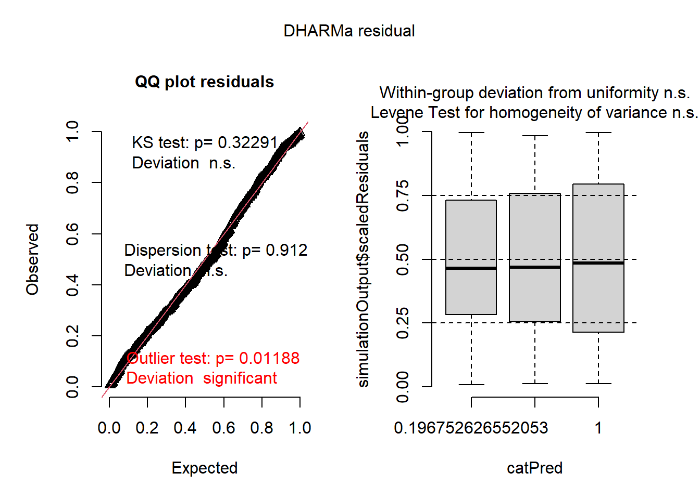

OFC ephys - Analyses (Figs 2, 3, S1-3)
Matheus Macedo-Lima
2024-05-29
Load libraries and data from preprocessing pipeline (OFC_ephys_preprocessing.Rmd)
Uncomment chunk below if the second block of code has been run previously and does not need modifications
#
# load('./Data/OFC_ephys/OFC_ephys_analyses_env.RData')
#
# library(ggplot2)
# library(dplyr)
# library(tidyr)
# # install.packages(c('remotes', 'TMB'))
# # remotes::install_github("glmmTMB/glmmTMB/glmmTMB", build_vignettes=FALSE)
# library(glmmTMB)
# library(DHARMa)
# library(car)
# library(reshape2)
# library(emmeans)
# library(rcompanion)
# # Create the notin operator
# `%notin%` <- Negate(`%in%`)
#
# # Some global plot parameters if modification is needed.
# source('./r_theme.r', echo=F)
# theme_set(theme_mml(base_size = 20))
# LINE_THICKNESS = 1
# ERRORBAR_THICKNESS = LINE_THICKNESS/2
# INDIVIDUAL_DATAPOINT_LINE = LINE_THICKNESS/1.5
# SMALL_PLOTS_LINE_THICKNESS = LINE_THICKNESS/3
# ACTIVEBASELINE_MODULATION_COLORS = c('#E39D51','#356B83', 'gray') # task-suppressed, -enhanced, -unchanged
#
# TRIALTYPE_MODULATION_COLORS = c('#46BDD7', '#9E4770', '#EB172C', 'black') # Hit, FA, miss, passiveNo need to run if chunk above has been run
library(ggplot2)
library(dplyr)
library(tidyr)
# install.packages(c('remotes', 'TMB'))
# remotes::install_github("glmmTMB/glmmTMB/glmmTMB", build_vignettes=FALSE)
library(glmmTMB)
library(DHARMa)
library(car)
library(reshape2)
library(emmeans)
library(rcompanion)
# Create the notin operator
`%notin%` <- Negate(`%in%`)
# Some global plot parameters if modification is needed.
source('./r_theme.r', echo=F)
theme_set(theme_mml(base_size = 20))
LINE_THICKNESS = 1
ERRORBAR_THICKNESS = LINE_THICKNESS/2
INDIVIDUAL_DATAPOINT_LINE = LINE_THICKNESS/1.5
SMALL_PLOTS_LINE_THICKNESS = LINE_THICKNESS/3
ACTIVEBASELINE_MODULATION_COLORS = c('#E39D51','#356B83', 'gray') # task-suppressed, -enhanced, -unchanged
TRIALTYPE_MODULATION_COLORS = c('#46BDD7', '#9E4770', '#EB172C', 'black') # Hit, FA, miss, passive
boxplot_whiskers <- function(x) {
r <- quantile(x, probs = c(0.10, 0.25, 0.5, 0.75, 0.90))
names(r) <- c("ymin", "lower", "middle", "upper", "ymax")
r
}
# Custom functions
z_score = function(response_df, baseline_df) {
# If variables have equal length, assume covariates, else don't use cov()
if(length(response_df) == length(baseline_df)) {
return(
(mean(response_df) - mean(baseline_df)) /
(sqrt(var(response_df) + var(baseline_df) -
2*cov(response_df, baseline_df)))
)
} else {
return(
(mean(response_df) - mean(baseline_df)) /
(sqrt(var(response_df) + var(baseline_df)))
)
}
}
zeromin = function(x) {
return( (x + 2*abs(min(x))) )
}
# Load data from preprocessing pipeline
df = read.csv('./Data/OFC_ephys/OFCPL_allTrial_df.csv')
# Remove eventual NA rows
df[df == "NaN"]<-NA
df = df[!is.na(df$Subject),]
# Factorize some columns
df$Session = factor(df$Session, levels=c('Pre', 'Active', 'Post', 'Post1h'))
cols_to_factorize = c('Unit', 'Subject', 'Date', 'TrialID', 'AMdepth', 'Period', 'Subject_date', 'Cluster_quality_MML', 'Cluster_quality_Allen')
df[cols_to_factorize] <- lapply(df[cols_to_factorize], factor)
# Separate SU and MU activity
# Call 'good' the intersection between MML and Allen classification
df$Cluster_quality = 'mua'
df[df$Cluster_quality_MML == 'good' & df$Cluster_quality_Allen == 'good',]$Cluster_quality = 'good'
# Simplify trial outcome labels
df$Trial_type = 'Miss (no shock)'
df[df$Hit == 1,]$Trial_type = 'Hit'
df[df$Miss == 1 & df$ShockFlag == 1,]$Trial_type = 'Miss (shock)'
df[df$FA == 1,]$Trial_type = 'False alarm'
df$Trial_type = factor(df$Trial_type, levels=c('Miss (shock)', 'Hit', 'False alarm', 'Miss (no shock)'))
df$Cluster_quality_Allen = 'mua'
df[(df$ISI_FPRate < 0.5) & (df$Fraction_missing < 0.1) & (df$Presence_ratio > 0.9) & (df$ISI_ViolationRate < 2),]$Cluster_quality_Allen = 'good'
# Call 'good' the intersection between MML and Allen
df$Cluster_quality = 'mua'
df[df$Cluster_quality_MML == 'good' & df$Cluster_quality_Allen == 'good',]$Cluster_quality = 'good'
# ---------------------------------------------------------------------------
# Data curation
# Ensure subjects 232 and 270 are not here (insufficient training days and units, respectively)
# Also SUBJ-ID-197 anatomy was off; probably only in OFC towards the end of training
subjects_to_exclude = c('SUBJ-ID-232', 'SUBJ-ID-270', 'SUBJ-ID-197')
df = df[df$Subject %notin% subjects_to_exclude,]
# SUBJ-ID-390_2022-06-24_16-37-06_PassivePost
# eliminate trials between 108.5 and 171.1 s when animal unplugged SPI cable; these translate to trials 77 through 119
df = df[!(df$Key_file == 'SUBJ-ID-390_SUBJ-ID-390_2022-06-24_16-37-06_PassivePost_trialInfo' & df$TrialID %in% 77:119),]
# Something strange happened on SUBJ-ID-390 6/27/22 Active where DACs become out of sync with ePsych by a variable offset starting when the animal regressed in AM depth difficulty after AM trial 7 (TrialID 178 on); remove trials after that here
# This did not happen in any other session
df = df[!(df$Key_file == 'SUBJ-ID-390_SUBJ-ID-390_2022-06-27_18-11-15_Active_trialInfo' & as.numeric(as.character(df$TrialID)) > 177),]
# Remove units without Pre recording
pre_units = unique(df[df$Session == 'Pre',]$Unit)
df = df[df$Unit %in% pre_units,]
df = droplevels(df)
# ---------------------------------------------------------------------------
# Save image for faster loading
save.image('./Data/OFC_ephys/OFC_ephys_analyses_env.RData')
# Some garbage collection
gc()## used (Mb) gc trigger (Mb) max used (Mb)
## Ncells 3198651 170.9 9810578 524.0 9810578 524.0
## Vcells 58783320 448.5 125650396 958.7 151228459 1153.8Get some descriptives
# Training days per subject
df %>% group_by(Subject) %>%
summarise(
Max_day = max(Day_of_training)
)## # A tibble: 5 × 2
## Subject Max_day
## <fct> <int>
## 1 SUBJ-ID-151 10
## 2 SUBJ-ID-154 13
## 3 SUBJ-ID-231 9
## 4 SUBJ-ID-389 9
## 5 SUBJ-ID-390 10# How many trials per session?
df_info = df[df$AMdepth_db != -40 & df$Period == 'Baseline',] %>% group_by(Subject, Session, Subject_date) %>%
summarise(
Trial_count = length(unique(TrialID))
)## `summarise()` has grouped output by 'Subject', 'Session'. You can override
## using the `.groups` argument.df_info %>% group_by(Session) %>%
summarise(
Trial_count_mean = mean(Trial_count),
Trial_count_ste = sd(Trial_count)/sqrt(n() - 1)
)## # A tibble: 4 × 3
## Session Trial_count_mean Trial_count_ste
## <fct> <dbl> <dbl>
## 1 Pre 101. 0.117
## 2 Active 110. 3.16
## 3 Post 101. 0.236
## 4 Post1h 101. 0.0645# How many single units?
df_info = df[df$AMdepth_db != -40 & df$Period == 'Baseline',] %>% group_by(Subject, Unit, Subject_date, Cluster_quality) %>%
summarise(
Trial_count = length(unique(TrialID)),
ISI_FPRate = mean(ISI_FPRate),
ISI_ViolationRate = mean(ISI_ViolationRate),
Fraction_missing = mean(Fraction_missing)
)## `summarise()` has grouped output by 'Subject', 'Unit', 'Subject_date'. You
## can override using the `.groups` argument.table(df_info$Cluster_quality)##
## good mua
## 313 234Figure 2E-G: Task-dependent tonic modulation
Fig 2E: Modulation strength distribution
# Prepare data using relevant variables
df_grouped = df[df$Trial_type != 'False alarm' & df$Period == 'Baseline',] %>% group_by(Unit, Subject, Date, Day_of_training, ActiveBaseline_modulation_direction) %>%
summarise(
FR_Hz_baseline = mean(FR_Hz),
Zscore_taskPassive = z_score(FR_Hz[Session=='Active'], FR_Hz[Session=='Pre'])
)## `summarise()` has grouped output by 'Unit', 'Subject', 'Date',
## 'Day_of_training'. You can override using the `.groups` argument.df_grouped$ActiveBaseline_modulation_direction = factor(df_grouped$ActiveBaseline_modulation_direction, levels=c('decrease', 'increase', 'none'))
# Plot
graph_data = df_grouped[!is.nan(df_grouped$Zscore_taskPassive),]
graph_data = graph_data[order(graph_data$Zscore_taskPassive),]
graph_data$Plot_order = seq(1, nrow(graph_data))
y_axis = seq(-2, 6, 2)
p = ggplot(data=graph_data, aes(x = Plot_order, y = Zscore_taskPassive, fill=ActiveBaseline_modulation_direction)) +
geom_bar(stat='identity', width=1) +
scale_fill_manual(values=ACTIVEBASELINE_MODULATION_COLORS, name='',
labels=c('Task-\nsuppressed', 'Task-\nenhanced', 'Task-\nunchanged')) +
geom_hline(yintercept = 0, color='black', linetype="dashed") +
ylab('Context modulation (z-score)') +
scale_y_continuous(breaks=y_axis, expand=c(0, 0)) +
coord_cartesian(ylim = c(min(y_axis), max(y_axis))) +
theme(
strip.background = element_blank(),
strip.text.y = element_blank(),
legend.position = c(0.2, 0.85),
axis.title.x=element_blank(),
axis.text.x=element_blank(),
axis.ticks.x=element_blank()
) +
guides(x = "none")
p
Fig 2F: Modulation strength comparison among groups
# Prepare data using relevant variables
df_grouped = df[df$Trial_type != 'False alarm' & df$Period == 'Baseline',] %>% group_by(Unit, Subject, Date, Day_of_training, ActiveBaseline_modulation_direction) %>%
summarise(
FR_Hz_baseline = mean(FR_Hz),
Zscore_taskPassive = z_score(FR_Hz[Session=='Active'], FR_Hz[Session=='Pre'])
)## `summarise()` has grouped output by 'Unit', 'Subject', 'Date',
## 'Day_of_training'. You can override using the `.groups` argument.df_grouped$ActiveBaseline_modulation_direction = factor(df_grouped$ActiveBaseline_modulation_direction, levels=c('decrease', 'increase', 'none'))
# Plot
graph_data = df_grouped[!is.nan(df_grouped$Zscore_taskPassive),]
# reversed_colors = rev(ACTIVEBASELINE_MODULATION_COLORS[1:2])
y_axis = seq(0, 1.5, 0.5)
p = ggplot(data=graph_data, aes(x = ActiveBaseline_modulation_direction, y = abs(Zscore_taskPassive), fill=ActiveBaseline_modulation_direction, color=ActiveBaseline_modulation_direction)) +
stat_summary(fun.data=boxplot_whiskers, geom="boxplot", na.rm = T, alpha=0.3, lwd=LINE_THICKNESS/2, fatten=1, width=0.75)+
ylab(expression('|Context modulation|')) +
scale_fill_manual(values=ACTIVEBASELINE_MODULATION_COLORS, name='',
guide='none') +
scale_color_manual(values=ACTIVEBASELINE_MODULATION_COLORS,
labels=c('Task-\nsuppressed', 'Task-\nenhanced', 'Task-\nunchanged'), name='') +
scale_y_continuous(breaks=y_axis, expand=c(0, 0)) +
coord_cartesian(ylim = c(min(y_axis), max(y_axis))) +
theme(
legend.position = c(0.2, 0.9),
axis.title.x=element_blank(),
axis.line.x = element_blank(),
axis.text.x=element_blank(),
axis.ticks.x=element_blank()
)
p
Stats
lme_data = graph_data
lme_bin <- glmmTMB(sqrt(sqrt(abs(Zscore_taskPassive))) ~ ActiveBaseline_modulation_direction + (1 | Subject/Unit), data=lme_data, family=gaussian)
simulationOutput <- simulateResiduals(fittedModel = lme_bin, plot = T, re.form=NULL) # pass
Anova(lme_bin)## Analysis of Deviance Table (Type II Wald chisquare tests)
##
## Response: sqrt(sqrt(abs(Zscore_taskPassive)))
## Chisq Df Pr(>Chisq)
## ActiveBaseline_modulation_direction 431.99 2 < 2.2e-16 ***
## ---
## Signif. codes: 0 '***' 0.001 '**' 0.01 '*' 0.05 '.' 0.1 ' ' 1pairs(regrid(emmeans(lme_bin, ~ActiveBaseline_modulation_direction)), adjust='Bonferroni')## Warning in (function (object, at, cov.reduce = mean, cov.keep = get_emm_option("cov.keep"), : There are unevaluated constants in the response formula
## Auto-detection of the response transformation may be incorrect## contrast estimate SE df t.ratio p.value
## decrease - increase -0.0181 0.0152 541 -1.194 0.6991
## decrease - none 0.3023 0.0165 541 18.319 <.0001
## increase - none 0.3204 0.0171 541 18.754 <.0001
##
## P value adjustment: bonferroni method for 3 testsFig 2G: Task-dependent firing rate change
# Group data using relevant columns
df_grouped = df[df$Trial_type != 'False alarm',] %>% group_by(Unit, Subject, Subject_date, Session, Period, ActiveBaseline_modulated, ActiveBaseline_modulation_direction, Cluster_quality) %>%
summarise(
FR_Hz = mean(FR_Hz, na.rm=T),
Spike_count = round(mean(Spike_count, na.rm=T)),
Threshold_improvement = mean(Threshold_improvement, na.rm=T),
Threshold_improvement_linear = mean(Threshold_improvement_linear, na.rm=T),
Threshold_linear = mean(Threshold_linear, na.rm=T),
Threshold = mean(Threshold, na.rm=T)
)## `summarise()` has grouped output by 'Unit', 'Subject', 'Subject_date',
## 'Session', 'Period', 'ActiveBaseline_modulated',
## 'ActiveBaseline_modulation_direction'. You can override using the
## `.groups` argument.df_grouped$ActiveBaseline_modulation_direction = factor(df_grouped$ActiveBaseline_modulation_direction, levels=c('decrease', 'increase', 'none'))
df_grouped$Session = factor(df_grouped$Session, levels=c('Pre', 'Active', 'Post'))
df_grouped = df_grouped[!is.na(df_grouped$Session),]
# Plot
graph_data = df_grouped[df_grouped$Period=='Baseline',]
graph_data$ActiveBaseline_modulation_direction = factor(graph_data$ActiveBaseline_modulation_direction, levels=c('decrease', 'increase', 'none'))
y_axis = seq(0, 30, 10)
p =ggplot(data=graph_data, aes(x=Session, y=(FR_Hz), fill=ActiveBaseline_modulation_direction, color=ActiveBaseline_modulation_direction)) +
facet_grid(.~ActiveBaseline_modulation_direction) +
stat_summary(fun.data=boxplot_whiskers, geom="boxplot", na.rm = T, alpha=0.3, lwd=LINE_THICKNESS/2, fatten=1, width=0.75)+
ylab('Firing rate (Hz)') +
scale_x_discrete(labels=c("Pre" = "Pre", "Active" = "Task",
"Post" = "Post")) +
scale_fill_manual(values=ACTIVEBASELINE_MODULATION_COLORS, name='',
guide='none') +
scale_color_manual(values=ACTIVEBASELINE_MODULATION_COLORS,
labels=c('Task-\nsuppressed', 'Task-\nenhanced', 'Task-\nunchanged'), name='') +
scale_y_continuous(breaks=y_axis, expand=c(0, 0)) +
coord_cartesian(ylim = c(min(y_axis), max(y_axis))) +
theme(
strip.background = element_blank(),
strip.text.y = element_blank(),
strip.text.x = element_blank(),
axis.title.x = element_blank(),
axis.line.x = element_blank(),
axis.ticks.x=element_blank(),
legend.position = c(0.2, 0.85),
axis.text.x = element_text(angle = 270, vjust = 0.5, hjust=0)
)
p
Stats
lme_data = graph_data[graph_data$ActiveBaseline_modulation_direction == 'decrease',]
lme_bin <- glmmTMB(sqrt(FR_Hz)~Session + (1 | Subject/Unit/Session), data=lme_data, family=gaussian)
simulationOutput <- simulateResiduals(fittedModel = lme_bin, plot = T, re.form=NULL) # pass
Anova(lme_bin)## Analysis of Deviance Table (Type II Wald chisquare tests)
##
## Response: sqrt(FR_Hz)
## Chisq Df Pr(>Chisq)
## Session 352.41 2 < 2.2e-16 ***
## ---
## Signif. codes: 0 '***' 0.001 '**' 0.01 '*' 0.05 '.' 0.1 ' ' 1pairs(regrid(emmeans(lme_bin, ~Session)), adjust='Bonferroni')## contrast estimate SE df t.ratio p.value
## Pre - Active 3.51 0.458 644 7.666 <.0001
## Pre - Post 1.66 0.275 644 6.051 <.0001
## Active - Post -1.85 0.296 644 -6.244 <.0001
##
## P value adjustment: bonferroni method for 3 testslme_data = graph_data[graph_data$ActiveBaseline_modulation_direction == 'increase',]
lme_bin <- glmmTMB(sqrt((FR_Hz))/100~Session + (1 | Subject/Unit/Session), data=lme_data, family=gaussian)## Warning in finalizeTMB(TMBStruc, obj, fit, h, data.tmb.old): Model convergence
## problem; non-positive-definite Hessian matrix. See vignette('troubleshooting')simulationOutput <- simulateResiduals(fittedModel = lme_bin, plot = T, re.form=NULL) # pass
Anova(lme_bin)## Analysis of Deviance Table (Type II Wald chisquare tests)
##
## Response: sqrt((FR_Hz))/100
## Chisq Df Pr(>Chisq)
## Session 368.83 2 < 2.2e-16 ***
## ---
## Signif. codes: 0 '***' 0.001 '**' 0.01 '*' 0.05 '.' 0.1 ' ' 1pairs(regrid(emmeans(lme_bin, ~Session)), adjust='Bonferroni')## Warning in (function (object, at, cov.reduce = mean, cov.keep = get_emm_option("cov.keep"), : There are unevaluated constants in the response formula
## Auto-detection of the response transformation may be incorrect## contrast estimate SE df t.ratio p.value
## Pre - Active -0.01013 0.000579 575 -17.511 <.0001
## Pre - Post -0.00111 0.000579 575 -1.926 0.1638
## Active - Post 0.00902 0.000579 575 15.585 <.0001
##
## P value adjustment: bonferroni method for 3 testslme_data = graph_data[graph_data$ActiveBaseline_modulation_direction == 'none',]
lme_bin <- glmmTMB((sqrt(FR_Hz))~Session + (1 | Subject/Unit/Session), data=lme_data, family=gaussian)
simulationOutput <- simulateResiduals(fittedModel = lme_bin, plot = T, re.form=NULL) # passAnova(lme_bin)## Analysis of Deviance Table (Type II Wald chisquare tests)
##
## Response: (sqrt(FR_Hz))
## Chisq Df Pr(>Chisq)
## Session 5.3515 2 0.06886 .
## ---
## Signif. codes: 0 '***' 0.001 '**' 0.01 '*' 0.05 '.' 0.1 ' ' 1Fig 3B-C: Pre-spout withdrawal
Analyze auROC data extracted from the Python pipeline
Fig 3B: Distribution of phasic modulation values
auroc_df = read.csv('./Data/OFC_ephys/TrialType_preSpoutOffset_allUnitsauROC_plotData.csv')
auroc_df = separate(data = auroc_df, col = Unit, sep = "_", into=c("Subject", "Date", "temp1"), remove=F)
# Remove temp columns
auroc_df = auroc_df[, -grep("temp", colnames(auroc_df))]
time_slice = c(-0.5, 0) # 0-0.1 s is not included
df_grouped = auroc_df[auroc_df$TrialType != 'SpoutOff_misses_auroc',] %>% group_by(Unit, Subject, TrialType, ActiveBaseline_modulation_direction) %>%
summarise(
auroc_timeSlice_mean = mean(auROC[(Time_s >= time_slice[1]) & (Time_s < time_slice[2])], na.rm=T),
phasic_modulation = mean(abs(auROC[(Time_s >= time_slice[1]) & (Time_s < time_slice[2])] - 0.5), na.rm=T)
)## `summarise()` has grouped output by 'Unit', 'Subject', 'TrialType'. You
## can override using the `.groups` argument.df_grouped = df_grouped[!is.na(df_grouped$auroc_timeSlice_mean),]
df_grouped$TrialType = factor(df_grouped$TrialType, levels=c('SpoutOff_hits_auroc', 'SpoutOff_FAs_auroc'))
levels(df_grouped$TrialType) = c('Hit', 'False alarm')
# Calculate the confidence interval's upper bound
l.model <- lm(phasic_modulation ~ 1, df_grouped)
abs_cutoff = confint(l.model, level=0.95)[2]
# Transform upper bound back to auROC metric space
upper_cutoff = 0.5 + abs_cutoff
lower_cutoff = 0.5 - abs_cutoff
# Cutoff based on 95% CI upper bound of the absolute phasic modulation
df_grouped$PreHit_modulated = 'unmodulated'
df_grouped$PreFA_modulated = 'unmodulated'
df_grouped$PreMiss_modulated = 'unmodulated'
df_grouped$PreHitOrFA_modulated = 'unmodulated'
df_grouped$PreHit_modulation_direction = 'none'
df_grouped$PreFA_modulation_direction = 'none'
df_grouped$PreMiss_modulation_direction = 'none'
# Hit-modulated
temp_df = df_grouped[df_grouped$TrialType == 'Hit',]
temp_increase_units = temp_df[(temp_df$auroc_timeSlice_mean > upper_cutoff),]$Unit
temp_decrease_units = temp_df[(temp_df$auroc_timeSlice_mean < lower_cutoff),]$Unit
df_grouped[df_grouped$Unit %in% temp_increase_units,]$PreHit_modulation_direction = 'increase'
df_grouped[df_grouped$Unit %in% temp_decrease_units,]$PreHit_modulation_direction = 'decrease'
df_grouped[df_grouped$PreHit_modulation_direction != 'none',]$PreHit_modulated = 'modulated'
# FA-modulated
temp_df = df_grouped[df_grouped$TrialType == 'False alarm',]
temp_increase_units = temp_df[(temp_df$auroc_timeSlice_mean > upper_cutoff),]$Unit
temp_decrease_units = temp_df[(temp_df$auroc_timeSlice_mean < lower_cutoff),]$Unit
df_grouped[df_grouped$Unit %in% temp_increase_units,]$PreFA_modulation_direction = 'increase'
df_grouped[df_grouped$Unit %in% temp_decrease_units,]$PreFA_modulation_direction = 'decrease'
df_grouped[df_grouped$PreFA_modulation_direction != 'none',]$PreFA_modulated = 'modulated'
# Either hit or FA modulated
df_grouped[(df_grouped$PreHit_modulated == 'modulated') | (df_grouped$PreFA_modulated == 'modulated'),]$PreHitOrFA_modulated = 'modulated'
# Get proportions
graph_data = df_grouped[df_grouped$TrialType=='Hit',]
cur_table = table(graph_data$PreHit_modulation_direction)
cur_table##
## decrease increase none
## 30 104 399cur_table/sum(cur_table)##
## decrease increase none
## 0.05628518 0.19512195 0.74859287hit_values = sum(cur_table[1:2]/sum(cur_table)*100) # For labeling the plot
cur_table = table(graph_data$PreFA_modulation_direction)
cur_table##
## decrease increase none
## 16 87 430cur_table/sum(cur_table)##
## decrease increase none
## 0.03001876 0.16322702 0.80675422fa_values = sum(cur_table[1:2]/sum(cur_table)*100) # For labeling the plot
cur_table = table(graph_data$PreHitOrFA_modulated)
cur_table##
## modulated unmodulated
## 180 353cur_table/sum(cur_table)##
## modulated unmodulated
## 0.3377111 0.6622889# Plot distributions
graph_data = df_grouped
y_axis = seq(0, 60, 20)
x_axis = round(c(0, abs_cutoff, 0.5), 1)
p = ggplot(df_grouped, aes(x=phasic_modulation, fill=TrialType)) +
geom_histogram(alpha=0.5, position="identity", binwidth=0.01, color='NA', boundary=0) +
# geom_vline(xintercept=lower_cutoff, size=LINE_THICKNESS/4, linetype='dashed') +
geom_vline(xintercept=round(abs_cutoff, 1), size=LINE_THICKNESS/4, linetype='dashed') +
scale_y_continuous(breaks=y_axis, expand=c(0, 0)) +
scale_x_continuous(breaks=x_axis, expand=c(0, 0)) +
coord_cartesian(ylim = c(min(y_axis), max(y_axis)),
xlim = c(min(x_axis), max(x_axis))) +
scale_color_manual(values = TRIALTYPE_MODULATION_COLORS, name='') +
scale_fill_manual(values = TRIALTYPE_MODULATION_COLORS, name='') +
ylab('Number of units') +
xlab('Phasic modulation') +
# Add percentage values
annotate("text", x=c(0.3), y=c(25), label=paste(round(hit_values, 0), '%', sep=''), color=TRIALTYPE_MODULATION_COLORS[1], size=LINE_THICKNESS*10) +
annotate("text", x=c(0.3), y=c(20), label=paste(round(fa_values, 0), '%', sep=''), color=TRIALTYPE_MODULATION_COLORS[2], size=LINE_THICKNESS*10) +
theme(
legend.position=c(0.85, 0.85)
)
p
Fig 3C: Phasic modulation before spout withdrawal
graph_data = auroc_df[(auroc_df$Time_s >= -1) & (auroc_df$Time_s < 0) & auroc_df$TrialType != 'SpoutOff_misses_auroc',]
graph_data = graph_data[!is.na(graph_data$auROC),]
graph_data$TrialType = factor(graph_data$TrialType, levels=c('SpoutOff_hits_auroc', 'SpoutOff_FAs_auroc'))
levels(graph_data$TrialType) = c('Hit', 'False alarm')
y_axis = seq(0.07, 0.17, 0.05)
x_axis = seq(-1, 0, 0.5)
p =ggplot(data=graph_data, aes(x=Time_s, y=abs(auROC-0.5), fill=TrialType, color=TrialType)) +
stat_summary(fun.data = mean_se, geom = "ribbon", na.rm = T, size=ERRORBAR_THICKNESS/2, width=ERRORBAR_THICKNESS/2, alpha=0.3, color=NA) +
stat_summary(fun="mean", geom="line", na.rm = T, alpha = 1, size=LINE_THICKNESS/4) +
ylab('Phasic modulation') +
xlab('Time re: spout withdrawal (s)') +
scale_y_continuous(breaks=y_axis, expand=c(0, 0)) +
scale_x_continuous(breaks=x_axis, expand=c(0, 0)) +
coord_cartesian(ylim = c(min(y_axis), max(y_axis)),
xlim = c(min(x_axis), max(x_axis))) +
scale_color_manual(values = TRIALTYPE_MODULATION_COLORS, name='') +
scale_fill_manual(values = TRIALTYPE_MODULATION_COLORS, name='') +
theme(
strip.background = element_blank(),
strip.text.y = element_blank(),
strip.text.x = element_blank(),
legend.position = c(0.25, 0.85),
panel.spacing = unit(1, "lines")
)
p
Stats
lme_data = df_grouped
lme_bin <- glmmTMB((blom(phasic_modulation, method='rankit'))~ TrialType + (1 | Subject/Unit/TrialType), data=lme_data, family=gaussian)
simulationOutput <- simulateResiduals(fittedModel = lme_bin, plot = T, re.form=NULL) # passAnova(lme_bin)## Analysis of Deviance Table (Type II Wald chisquare tests)
##
## Response: (blom(phasic_modulation, method = "rankit"))
## Chisq Df Pr(>Chisq)
## TrialType 49.281 1 2.218e-12 ***
## ---
## Signif. codes: 0 '***' 0.001 '**' 0.01 '*' 0.05 '.' 0.1 ' ' 1Fig S2: Post-spout withdrawal
Fig S2B: Distribution of phasic modulation values
auroc_df = read.csv('./Data/OFC_ephys/TrialType_postSpoutOffset_allUnitsauROC_plotData.csv')
auroc_df = separate(data = auroc_df, col = Unit, sep = "_", into=c("Subject", "Date", "temp1"), remove=F)
auroc_df = auroc_df[, -grep("temp", colnames(auroc_df))] # Remove temp columns
time_slice = c(0.3, 0.8) # 0.8-0.9 s is not included
df_grouped = auroc_df[auroc_df$TrialType %in% c('SpoutOff_hits_auroc', 'SpoutOff_FAs_auroc', 'SpoutOff_misses_auroc'),] %>% group_by(Unit, Subject, TrialType, ActiveBaseline_modulation_direction) %>%
summarise(
auroc_timeSlice_mean = mean(auROC[(Time_s >= time_slice[1]) & (Time_s < time_slice[2])], na.rm=T),
phasic_modulation = mean(abs(auROC[(Time_s >= time_slice[1]) & (Time_s < time_slice[2])] - 0.5), na.rm=T)
)## `summarise()` has grouped output by 'Unit', 'Subject', 'TrialType'. You
## can override using the `.groups` argument.df_grouped = df_grouped[!is.na(df_grouped$auroc_timeSlice_mean),]
df_grouped$TrialType = factor(df_grouped$TrialType, levels=c('SpoutOff_hits_auroc', 'SpoutOff_FAs_auroc', 'SpoutOff_misses_auroc'))
levels(df_grouped$TrialType) = c('Hit', 'False alarm', 'Miss')
# Calculate the confidence interval's upper bound from the phasic modulation distribution
l.model <- lm(phasic_modulation ~ 1, df_grouped)
abs_cutoff = confint(l.model, level=0.95)[2]
# Transform upper bound back to auROC metric space
upper_cutoff = 0.5 + abs_cutoff
lower_cutoff = 0.5 - abs_cutoff
# Cutoff based on auROC
df_grouped$PostHit_modulated = 'unmodulated'
df_grouped$PostFA_modulated = 'unmodulated'
df_grouped$PostMiss_modulated = 'unmodulated'
df_grouped$PostHitOrFAOrMiss_modulated = 'unmodulated'
df_grouped$PostHit_modulation_direction = 'none'
df_grouped$PostFA_modulation_direction = 'none'
df_grouped$PostMiss_modulation_direction = 'none'
# Hit modulation
temp_df = df_grouped[df_grouped$TrialType == 'Hit',]
temp_increase_units = temp_df[(temp_df$auroc_timeSlice_mean > upper_cutoff),]$Unit
temp_decrease_units = temp_df[(temp_df$auroc_timeSlice_mean < lower_cutoff),]$Unit
df_grouped[df_grouped$Unit %in% temp_increase_units,]$PostHit_modulation_direction = 'increase'
df_grouped[df_grouped$Unit %in% temp_decrease_units,]$PostHit_modulation_direction = 'decrease'
df_grouped[df_grouped$PostHit_modulation_direction != 'none',]$PostHit_modulated = 'modulated'
# FA modulation
temp_df = df_grouped[df_grouped$TrialType == 'False alarm',]
temp_increase_units = temp_df[(temp_df$auroc_timeSlice_mean > upper_cutoff),]$Unit
temp_decrease_units = temp_df[(temp_df$auroc_timeSlice_mean < lower_cutoff),]$Unit
df_grouped[df_grouped$Unit %in% temp_increase_units,]$PostFA_modulation_direction = 'increase'
df_grouped[df_grouped$Unit %in% temp_decrease_units,]$PostFA_modulation_direction = 'decrease'
df_grouped[df_grouped$PostFA_modulation_direction != 'none',]$PostFA_modulated = 'modulated'
# Miss modulation
temp_df = df_grouped[df_grouped$TrialType == 'Miss',]
temp_increase_units = temp_df[(temp_df$auroc_timeSlice_mean > upper_cutoff),]$Unit
temp_decrease_units = temp_df[(temp_df$auroc_timeSlice_mean < lower_cutoff),]$Unit
df_grouped[df_grouped$Unit %in% temp_increase_units,]$PostMiss_modulation_direction = 'increase'
df_grouped[df_grouped$Unit %in% temp_decrease_units,]$PostMiss_modulation_direction = 'decrease'
df_grouped[df_grouped$PostMiss_modulation_direction != 'none',]$PostMiss_modulated = 'modulated'
# Either hit, FA or miss modulated
df_grouped[(df_grouped$PostHit_modulated == 'modulated') | (df_grouped$PostFA_modulated == 'modulated'),]$PostHitOrFAOrMiss_modulated = 'modulated'
# Get proportions
graph_data = df_grouped[df_grouped$TrialType=='Hit',]
cur_table = table(graph_data$PostHit_modulation_direction)
cur_table##
## decrease increase none
## 55 201 277cur_table/sum(cur_table)##
## decrease increase none
## 0.1031895 0.3771107 0.5196998hit_values = sum(cur_table[1:2]/sum(cur_table)*100)
cur_table = table(graph_data$PostFA_modulation_direction)
cur_table##
## decrease increase none
## 25 133 375cur_table/sum(cur_table)##
## decrease increase none
## 0.04690432 0.24953096 0.70356473fa_values = sum(cur_table[1:2]/sum(cur_table)*100)
cur_table = table(graph_data$PostMiss_modulation_direction)
cur_table##
## decrease increase none
## 36 118 379cur_table/sum(cur_table)##
## decrease increase none
## 0.06754221 0.22138837 0.71106942miss_values = sum(cur_table[1:2]/sum(cur_table)*100)
cur_table = table(graph_data$PostHitOrFAOrMiss_modulated)
cur_table##
## modulated unmodulated
## 278 255cur_table/sum(cur_table)##
## modulated unmodulated
## 0.521576 0.478424# Plot distributions
graph_data = df_grouped
y_axis = seq(0, 60, 20)
x_axis = round(c(0, abs_cutoff, 0.5), 1)
p = ggplot(df_grouped, aes(x=phasic_modulation, fill=TrialType)) +
geom_histogram(alpha=0.5, position="identity", binwidth=0.01, color='NA', boundary=0) +
# geom_vline(xintercept=lower_cutoff, size=LINE_THICKNESS/4, linetype='dashed') +
geom_vline(xintercept=round(abs_cutoff, 1), size=LINE_THICKNESS/4, linetype='dashed') +
scale_y_continuous(breaks=y_axis, expand=c(0, 0)) +
scale_x_continuous(breaks=x_axis, expand=c(0, 0)) +
coord_cartesian(ylim = c(min(y_axis), max(y_axis)),
xlim = c(min(x_axis), max(x_axis))) +
scale_color_manual(values = TRIALTYPE_MODULATION_COLORS, name='') +
scale_fill_manual(values = TRIALTYPE_MODULATION_COLORS, name='') +
ylab('Number of units') +
xlab('Mean phasic modulation') +
# Add percentage values
annotate("text", x=c(0.3), y=c(30), label=paste(round(hit_values, 0), '%', sep=''), color=TRIALTYPE_MODULATION_COLORS[1], size=LINE_THICKNESS*10) +
annotate("text", x=c(0.3), y=c(25), label=paste(round(fa_values, 0), '%', sep=''), color=TRIALTYPE_MODULATION_COLORS[2], size=LINE_THICKNESS*10) +
annotate("text", x=c(0.3), y=c(20), label=paste(round(miss_values, 0), '%', sep=''), color=TRIALTYPE_MODULATION_COLORS[3], size=LINE_THICKNESS*10) +
theme(
legend.position=c(0.85, 0.85)
)
pFig S2C: Phasic modulation after spout withdrawal
graph_data = df_grouped
# Plot the curves
graph_data = auroc_df[(auroc_df$Time_s >= 0.3) & (auroc_df$Time_s < 2),]
graph_data = graph_data[!is.na(graph_data$auROC),]
graph_data$TrialType = factor(graph_data$TrialType, levels=c('SpoutOff_hits_auroc', 'SpoutOff_FAs_auroc', 'SpoutOff_misses_auroc'))
levels(graph_data$TrialType) = c('Hit', 'False alarm', 'Miss')
y_axis = seq(0, 0.3, 0.1)
x_axis = c(0.3, 0.8, 1.5, 2)
p =ggplot(data=graph_data, aes(x=Time_s, y=abs(auROC-0.5), color=TrialType, fill=TrialType)) +
# facet_grid(.~PostHitOrFAOrMiss_modulated) +
stat_summary(fun.data = mean_se, geom = "ribbon", na.rm = T, size=ERRORBAR_THICKNESS/2, alpha=0.3, color=NA) +
stat_summary(fun="mean", geom="line", na.rm = T, alpha = 1, size=LINE_THICKNESS/4) +
ylab('Phasic modulation') +
xlab('Time re: spout withdrawal (s)') +
scale_y_continuous(breaks=y_axis, expand=c(0, 0)) +
scale_x_continuous(breaks=x_axis, expand=c(0, 0)) +
coord_cartesian(ylim = c(min(y_axis), max(y_axis)),
xlim = c(min(x_axis), max(x_axis))) +
scale_color_manual(values = TRIALTYPE_MODULATION_COLORS, name='') +
scale_fill_manual(values = TRIALTYPE_MODULATION_COLORS, name='') +
theme(
strip.background = element_blank(),
strip.text.y = element_blank(),
strip.text.x = element_blank(),
legend.position = c(0.85, 0.85),
panel.spacing = unit(1, "lines")
)
p
Stats
lme_data = df_grouped
lme_bin <- glmmTMB(blom(phasic_modulation, method='rankit')*10~ TrialType + (1 | Subject/Unit/TrialType), data=lme_data, family=gaussian)
simulationOutput <- simulateResiduals(fittedModel = lme_bin, plot = T, re.form=NULL) # passAnova(lme_bin)## Analysis of Deviance Table (Type II Wald chisquare tests)
##
## Response: blom(phasic_modulation, method = "rankit") * 10
## Chisq Df Pr(>Chisq)
## TrialType 203.98 2 < 2.2e-16 ***
## ---
## Signif. codes: 0 '***' 0.001 '**' 0.01 '*' 0.05 '.' 0.1 ' ' 1pairs(regrid(emmeans(lme_bin, ~TrialType)), adjust='Bonferroni')## Warning in (function (object, at, cov.reduce = mean, cov.keep = get_emm_option("cov.keep"), : There are unevaluated constants in the response formula
## Auto-detection of the response transformation may be incorrect## contrast estimate SE df t.ratio p.value
## Hit - False alarm 4.779 0.395 1576 12.091 <.0001
## Hit - Miss 4.925 0.391 1576 12.589 <.0001
## False alarm - Miss 0.145 0.395 1576 0.367 1.0000
##
## P value adjustment: bonferroni method for 3 testsFig S3: Phasic firing by tonic modulation
Fig S3B
auroc_df = read.csv('./Data/OFC_ephys/TrialType_postSpoutOffset_allUnitsauROC_plotData.csv')
auroc_df = separate(data = auroc_df, col = Unit, sep = "_", into=c("Subject", "Date", "temp1"), remove=F)
# Remove temp columns
auroc_df = auroc_df[, -grep("temp", colnames(auroc_df))]
# Plot the curves
graph_data = auroc_df[(auroc_df$Time_s >= 0.3) & (auroc_df$Time_s < 2),]
graph_data = graph_data[!is.na(graph_data$auROC),]
graph_data$TrialType = factor(graph_data$TrialType, levels=c('SpoutOff_hits_auroc', 'SpoutOff_FAs_auroc', 'SpoutOff_misses_auroc'))
levels(graph_data$TrialType) = c('Hit', 'False alarm', 'Miss')
graph_data$ActiveBaseline_modulation_direction = factor(graph_data$ActiveBaseline_modulation_direction, levels=c('decrease', 'increase', 'none'))
levels(graph_data$ActiveBaseline_modulation_direction) = c('Task-suppressed', 'Task-enhanced', 'Task-unchanged')
y_axis = c(0, 0.1, 0.2, 0.3)
x_axis = c(0.3, 0.8, 1.5, 2)
p =ggplot(data=graph_data, aes(x=Time_s, y=abs(auROC-0.5), color=TrialType, fill=TrialType)) +
facet_grid(.~ActiveBaseline_modulation_direction) +
stat_summary(fun.data = mean_se, geom = "ribbon", na.rm = T, size=ERRORBAR_THICKNESS/2, width=ERRORBAR_THICKNESS/2, alpha=0.3, color=NA) +
stat_summary(fun="mean", geom="line", na.rm = T, alpha = 1, size=LINE_THICKNESS/4) +
ylab('Phasic modulation') +
xlab('Time re: spout withdrawal (s)') +
scale_y_continuous(breaks=y_axis, expand=c(0, 0)) +
scale_x_continuous(breaks=x_axis, expand=c(0, 0)) +
coord_cartesian(ylim = c(min(y_axis), max(y_axis)),
xlim = c(min(x_axis), max(x_axis))) +
scale_color_manual(values = TRIALTYPE_MODULATION_COLORS, name='') +
scale_fill_manual(values = TRIALTYPE_MODULATION_COLORS, name='') +
theme(
strip.background = element_blank(),
legend.position = c(0.85, 0.9),
panel.spacing = unit(2.5, "lines")
)
p
Stats
time_slice = c(0.3, 0.8)
df_grouped = auroc_df %>% group_by(Unit, Subject, TrialType, ActiveBaseline_modulation_direction) %>%
summarise(
phasic_modulation = mean(abs(auROC[(Time_s >= time_slice[1]) & (Time_s < time_slice[2])] - 0.5), na.rm=T)
)## `summarise()` has grouped output by 'Unit', 'Subject', 'TrialType'. You
## can override using the `.groups` argument.df_grouped$TrialType = factor(df_grouped$TrialType, levels=c('SpoutOff_hits_auroc', 'SpoutOff_FAs_auroc', 'SpoutOff_misses_auroc'))
levels(df_grouped$TrialType) = c('Hit', 'False alarm', 'Miss')
df_grouped$ActiveBaseline_modulation_direction = factor(df_grouped$ActiveBaseline_modulation_direction, levels=c('decrease', 'increase', 'none'))
levels(df_grouped$ActiveBaseline_modulation_direction) = c('Task-suppressed', 'Task-enhanced', 'Task-unchanged')
lme_data = df_grouped[df_grouped$ActiveBaseline_modulation_direction=='Task-suppressed',]
lme_bin <- glmmTMB((sqrt(phasic_modulation))~ TrialType + (1 | Subject/Unit/TrialType), data=lme_data, family=gaussian)
simulationOutput <- simulateResiduals(fittedModel = lme_bin, plot = T, re.form=NULL) # pass
Anova(lme_bin)## Analysis of Deviance Table (Type II Wald chisquare tests)
##
## Response: (sqrt(phasic_modulation))
## Chisq Df Pr(>Chisq)
## TrialType 89.686 2 < 2.2e-16 ***
## ---
## Signif. codes: 0 '***' 0.001 '**' 0.01 '*' 0.05 '.' 0.1 ' ' 1pairs(regrid(emmeans(lme_bin, ~TrialType)), adjust='Bonferroni')## Warning in (function (object, at, cov.reduce = mean, cov.keep = get_emm_option("cov.keep"), : There are unevaluated constants in the response formula
## Auto-detection of the response transformation may be incorrect## contrast estimate SE df t.ratio p.value
## Hit - False alarm 0.071697 0.00876 622 8.188 <.0001
## Hit - Miss 0.070785 0.00865 622 8.182 <.0001
## False alarm - Miss -0.000912 0.00876 622 -0.104 1.0000
##
## P value adjustment: bonferroni method for 3 testslme_data = df_grouped[df_grouped$ActiveBaseline_modulation_direction=='Task-enhanced',]
lme_bin <- glmmTMB((sqrt(phasic_modulation))~ TrialType + (1 | Subject/Unit/TrialType), data=lme_data, family=gaussian)## Warning in finalizeTMB(TMBStruc, obj, fit, h, data.tmb.old): Model convergence
## problem; non-positive-definite Hessian matrix. See vignette('troubleshooting')simulationOutput <- simulateResiduals(fittedModel = lme_bin, plot = T, re.form=NULL) # passAnova(lme_bin)## Analysis of Deviance Table (Type II Wald chisquare tests)
##
## Response: (sqrt(phasic_modulation))
## Chisq Df Pr(>Chisq)
## TrialType 104.72 2 < 2.2e-16 ***
## ---
## Signif. codes: 0 '***' 0.001 '**' 0.01 '*' 0.05 '.' 0.1 ' ' 1pairs(regrid(emmeans(lme_bin, ~TrialType)), adjust='Bonferroni')## Warning in (function (object, at, cov.reduce = mean, cov.keep = get_emm_option("cov.keep"), : There are unevaluated constants in the response formula
## Auto-detection of the response transformation may be incorrect## contrast estimate SE df t.ratio p.value
## Hit - False alarm 0.09385 0.0104 570 8.984 <.0001
## Hit - Miss 0.09023 0.0104 570 8.709 <.0001
## False alarm - Miss -0.00362 0.0104 570 -0.347 1.0000
##
## P value adjustment: bonferroni method for 3 testslme_data = df_grouped[df_grouped$ActiveBaseline_modulation_direction=='Task-unchanged',]
lme_bin <- glmmTMB((log(phasic_modulation+0.1))*100~ TrialType + (1 | Subject/Unit/TrialType), data=lme_data, family=gaussian)
simulationOutput <- simulateResiduals(fittedModel = lme_bin, plot = T, re.form=NULL) # passAnova(lme_bin)## Analysis of Deviance Table (Type II Wald chisquare tests)
##
## Response: (log(phasic_modulation + 0.1)) * 100
## Chisq Df Pr(>Chisq)
## TrialType 21.378 2 2.279e-05 ***
## ---
## Signif. codes: 0 '***' 0.001 '**' 0.01 '*' 0.05 '.' 0.1 ' ' 1pairs(regrid(emmeans(lme_bin, ~TrialType)), adjust='Bonferroni')## Warning in (function (object, at, cov.reduce = mean, cov.keep = get_emm_option("cov.keep"), : There are unevaluated constants in the response formula
## Auto-detection of the response transformation may be incorrect## contrast estimate SE df t.ratio p.value
## Hit - False alarm 11.99 3.45 370 3.472 0.0017
## Hit - Miss 14.93 3.41 370 4.371 <.0001
## False alarm - Miss 2.94 3.45 370 0.852 1.0000
##
## P value adjustment: bonferroni method for 3 testsFig S3C
# Plot the curves
graph_data = auroc_df[(auroc_df$Time_s >= -1) & (auroc_df$Time_s < 0) & auroc_df$TrialType != 'SpoutOff_misses_auroc',]
graph_data = graph_data[!is.na(graph_data$auROC),]
graph_data$TrialType = factor(graph_data$TrialType, levels=c('SpoutOff_hits_auroc', 'SpoutOff_FAs_auroc'))
levels(graph_data$TrialType) = c('Hit', 'False alarm')
graph_data$ActiveBaseline_modulation_direction = factor(graph_data$ActiveBaseline_modulation_direction, levels=c('decrease', 'increase', 'none'))
levels(graph_data$ActiveBaseline_modulation_direction) = c('Task-suppressed', 'Task-enhanced', 'Task-unchanged')
y_axis = seq(0.0, 0.25, 0.05)
x_axis = seq(-1, 0, 0.5)
p =ggplot(data=graph_data, aes(x=Time_s, y=abs(auROC-0.5), color=TrialType, fill=TrialType)) +
facet_grid(.~ActiveBaseline_modulation_direction) +
stat_summary(fun.data = mean_se, geom = "ribbon", na.rm = T, size=ERRORBAR_THICKNESS/2, alpha=0.3, color=NA) +
stat_summary(fun="mean", geom="line", na.rm = T, alpha = 1, size=LINE_THICKNESS/4) +
ylab('Phasic modulation') +
xlab('Time re: spout withdrawal (s)') +
scale_y_continuous(breaks=y_axis, expand=c(0, 0)) +
scale_x_continuous(breaks=x_axis, expand=c(0, 0)) +
coord_cartesian(ylim = c(min(y_axis), max(y_axis)),
xlim = c(min(x_axis), max(x_axis))) +
scale_color_manual(values = TRIALTYPE_MODULATION_COLORS, name='') +
scale_fill_manual(values = TRIALTYPE_MODULATION_COLORS, name='') +
theme(
strip.background = element_blank(),
# strip.text.y = element_blank(),
# strip.text.x = element_blank(),
# axis.text.x.bottom = element_blank(),
legend.position = c(0.85, 0.85),
panel.spacing = unit(2.5, "lines")
)
p
Stats
time_slice = c(-0.5, 0)
df_grouped = auroc_df[auroc_df$TrialType %in% c('SpoutOff_hits_auroc', 'SpoutOff_FAs_auroc'),] %>% group_by(Unit, Subject, TrialType, ActiveBaseline_modulation_direction) %>%
summarise(
phasic_modulation = mean(abs(auROC[(Time_s >= time_slice[1]) & (Time_s < time_slice[2])] - 0.5), na.rm=T)
)## `summarise()` has grouped output by 'Unit', 'Subject', 'TrialType'. You
## can override using the `.groups` argument.df_grouped$TrialType = factor(df_grouped$TrialType, levels=c('SpoutOff_hits_auroc', 'SpoutOff_FAs_auroc'))
levels(df_grouped$TrialType) = c('Hit', 'False alarm')
df_grouped$ActiveBaseline_modulation_direction = factor(df_grouped$ActiveBaseline_modulation_direction, levels=c('decrease', 'increase', 'none'))
levels(df_grouped$ActiveBaseline_modulation_direction) = c('Task-suppressed', 'Task-enhanced', 'Task-unchanged')
lme_data = df_grouped[df_grouped$ActiveBaseline_modulation_direction=='Task-suppressed',]
lme_bin <- glmmTMB((log(phasic_modulation+0.1))~ TrialType + (1 | Subject/Unit/TrialType), data=lme_data, family=gaussian)
simulationOutput <- simulateResiduals(fittedModel = lme_bin, plot = T, re.form=NULL) # passAnova(lme_bin)## Analysis of Deviance Table (Type II Wald chisquare tests)
##
## Response: (log(phasic_modulation + 0.1))
## Chisq Df Pr(>Chisq)
## TrialType 20.842 1 4.989e-06 ***
## ---
## Signif. codes: 0 '***' 0.001 '**' 0.01 '*' 0.05 '.' 0.1 ' ' 1lme_data = df_grouped[df_grouped$ActiveBaseline_modulation_direction=='Task-enhanced',]
lme_bin <- glmmTMB((log(phasic_modulation+0.1))~ TrialType + (1 | Subject/Unit/TrialType), data=lme_data, family=gaussian)
simulationOutput <- simulateResiduals(fittedModel = lme_bin, plot = T, re.form=NULL) # passAnova(lme_bin)## Analysis of Deviance Table (Type II Wald chisquare tests)
##
## Response: (log(phasic_modulation + 0.1))
## Chisq Df Pr(>Chisq)
## TrialType 31.561 1 1.933e-08 ***
## ---
## Signif. codes: 0 '***' 0.001 '**' 0.01 '*' 0.05 '.' 0.1 ' ' 1lme_data = df_grouped[df_grouped$ActiveBaseline_modulation_direction=='Task-unchanged',]
lme_bin <- glmmTMB((log(phasic_modulation+0.1))~ TrialType + (1 | Subject/Unit/TrialType), data=lme_data, family=gaussian)
simulationOutput <- simulateResiduals(fittedModel = lme_bin, plot = T, re.form=NULL) # passAnova(lme_bin)## Analysis of Deviance Table (Type II Wald chisquare tests)
##
## Response: (log(phasic_modulation + 0.1))
## Chisq Df Pr(>Chisq)
## TrialType 2.4882 1 0.1147Fig S1G heatmaps were generated using our Python preprocessing pipeline.
You can find this code here